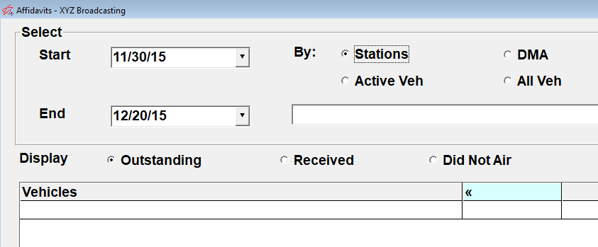
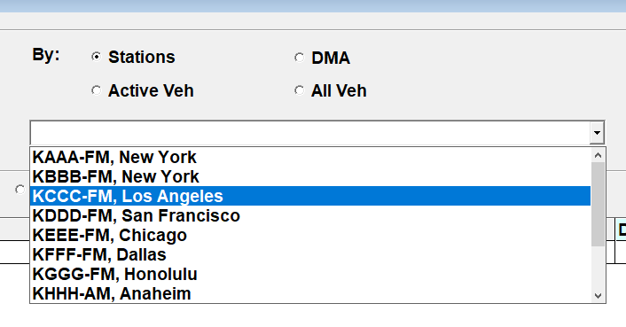
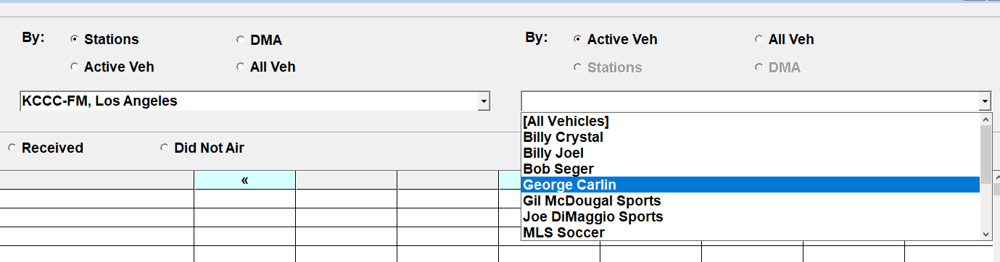
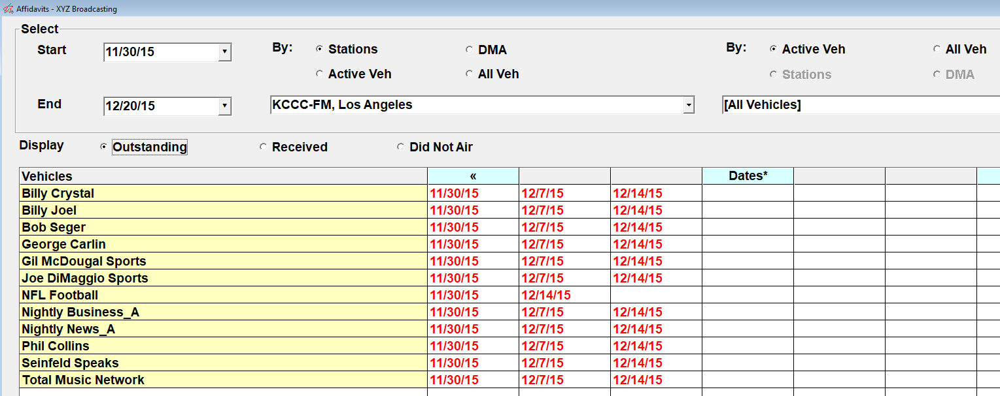
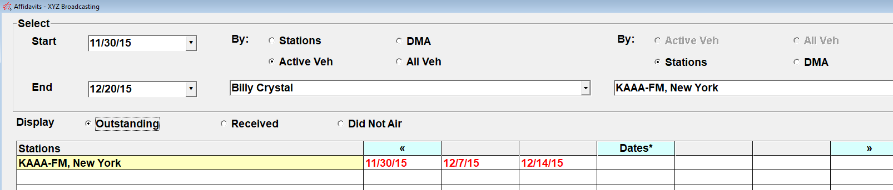

Affidavit Selectivity
The main Affiliate Affidavits screen has two parts. The top part of the screen is used to choose the criteria that will be used to bring up the affiliate affidavits, and the bottom part of the screen shows the affidavit weeks that meet the selected criteria.
On version 7.1 and above, a start and end date filter is available on the left side of the screen that can be used to filter the results by date, to reduce the number of results that are shown.

The Affiliate Affidavits screen is organized in a way that lets you choose whether to select the station first then the affiliated vehicles, or the vehicle first then the stations affiliated with that vehicle.
By Station and Vehicle
By default, the “By Stations” radio button is selected. With this option, the stations are sorted alphabetically by call letters. Alternatively, you can select the DMA radio button to view the list of stations sorted alphabetically by DMA name.

When using the Stations or DMA option, after selecting the station you wish to view from the station dropdown, select the vehicle you wish to view from the vehicle dropdown on the right side of the screen (there are minor cosmetic differences on this screen on different versions).

The vehicle list can show active vehicles - which includes only those vehicles that are affiliated with the selected station and that are set as “active” on the Traffic system - by selecting the “Active Veh” radio button. To see both active and dormant vehicles (that are affiliated with the selected station), select the “All Veh” radio button.
When choosing the “Select by Stations” option, you can choose to view all vehicles by selecting the “All Vehicles” choice at the top of the dropdown list, or an individual vehicle.
In this example, “All Vehicles” was selected. Each vehicle is shown on the left side of the screen (with the yellow background), with affidavit dates shown on the right side of the screen.

By Vehicle and Station
When setting the “Sort By” option on the left side of the screen to “Active Veh” or “All Veh”, the dropdown on the left side of the screen will list vehicles (dormant vehicles are excluded when selecting “Active Veh”), and the dropdown on the right side of the screen will list stations. The stations are sorted alphabetically by call letters or by DMA when the DMA radio button is selected.
From this view, either select “All Stations” to view the affidavits for all the stations affiliated with the selected vehicle, or select a single station.
In this example, a single station was selected.
